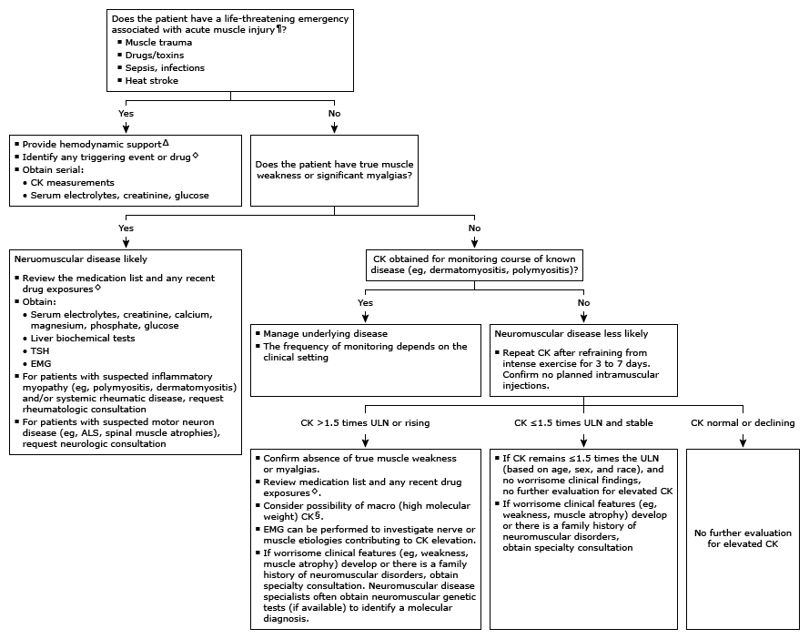

ALS: amyotrophic lateral sclerosis; CK: creatine kinase; EMG: electromyography; TSH: thyroid stimulating hormone; ULN: upper limits of normal.
* Interpretation of a specific abnormal test result should be based on the reference range reported with that result based on age (lower with advancing age), race (higher in Black Americans compared with White, Hispanic, or Asian Americans), and sex (higher in males than females).
¶ Life-threatening disease is usually associated with extreme elevations of CK, electrolyte imbalances, and acute kidney injury, but these parameters maybe normal early in the process.
Δ Life-saving interventions should not be delayed while awaiting the results of diagnostic testing.
◊ Drugs may cause elevations in CK ranging from mild to massive. The clinical manifestations of a drug-induced myopathy are variable. There may be no associated symptoms, or there may be symptoms of myalgia, fatigue, muscle weakness, or myoglobinuria. Symptoms (if present) and serum CK concentrations return to normal over days to weeks after discontinuation.
§ Macro CK is suspected if there is an unexpected increase in the MB isoenzyme on CK electrophoresis.